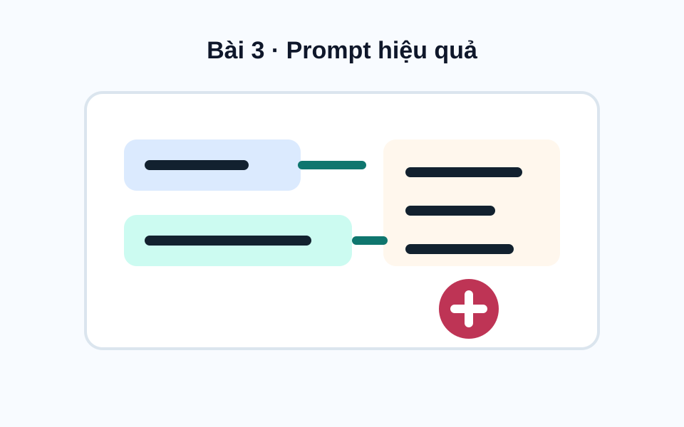
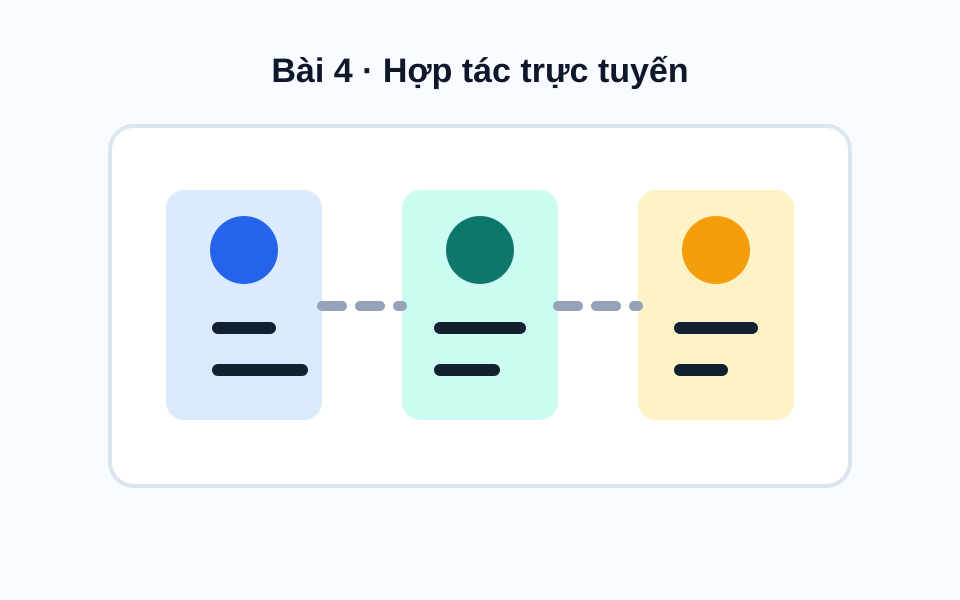

Sinh viên
Đặng Quang Vương
- MSSV
- 23100551
- Lớp
- QH2023HA
- Trường
- Trường Đại học Y Dược, Đại học Quốc gia Hà Nội
- Lĩnh vực
- Y tế, kỹ thuật chẩn đoán hình ảnh
Y tế số - Chẩn đoán hình ảnh - AI học tập
Portfolio này tổng hợp quá trình thực hiện 6 bài tập học phần, thể hiện khả năng sử dụng công cụ số, tìm kiếm thông tin, viết prompt, hợp tác trực tuyến và ứng dụng AI trong học tập. Các nội dung được định hướng theo lĩnh vực y tế, đặc biệt là khả năng khai thác công nghệ để hỗ trợ học tập, nghiên cứu và chẩn đoán hình ảnh.
Giới thiệu
Website hệ thống hóa quá trình học tập qua 6 bài thực hành, kèm minh chứng PDF và phần tổng kết cuối kỳ.
Sinh viên
Rèn luyện năng lực sử dụng công cụ số, khai thác thông tin học thuật, làm việc nhóm trực tuyến và ứng dụng AI tạo sinh một cách hiệu quả.
Các kỹ năng này hỗ trợ quá trình tìm kiếm tài liệu, phân tích dữ liệu, trình bày vấn đề và xây dựng sản phẩm học tập có tính khoa học.
Portfolio là nơi lưu trữ kết quả, minh chứng quá trình thực hiện và phản ánh sự tiến bộ trong việc sử dụng công nghệ phục vụ học tập.
Bài tập học phần
Mỗi bài được trình bày theo dạng thẻ tóm tắt nghiên cứu, có mô tả ngắn, nhãn kỹ năng và liên kết PDF.

Bài 1
Rèn luyện kỹ năng thao tác với tệp và thư mục trên máy tính, gồm tạo thư mục, tạo tệp văn bản, đổi tên, sắp xếp và quản lý tài liệu học tập một cách có hệ thống.

Bài 2
Rèn luyện khả năng tìm kiếm, chọn lọc và đánh giá nguồn thông tin học thuật từ cơ sở dữ liệu, tạp chí khoa học, sách chuyên khảo và nguồn mở đáng tin cậy.

Bài 3
Phát triển kỹ năng viết prompt để sử dụng các mô hình AI trong học tập, đặc biệt với các tác vụ tóm tắt tài liệu, giải thích khái niệm và tạo câu hỏi ôn tập.

Bài 4
Rèn luyện kỹ năng tổ chức, phối hợp và quản lý công việc nhóm thông qua các công cụ trực tuyến như Trello, Google Docs, Google Drive và Google Meet.
Bài 5
Thực hành sử dụng nhiều công cụ AI tạo sinh để xây dựng sản phẩm nội dung số, cụ thể là bài thuyết trình về chủ đề béo phì ở trẻ em.

Bài 6
Nghiên cứu cách sử dụng AI có trách nhiệm trong học tập và nghiên cứu, bao gồm vấn đề đạo đức, minh bạch, trích dẫn và kiểm chứng thông tin.
Tiến trình
Các kỹ năng được phát triển theo hướng phục vụ học tập y khoa, nghiên cứu tài liệu và tiếp cận công nghệ hỗ trợ chẩn đoán hình ảnh.
Tổ chức tệp, thư mục và minh chứng học tập có hệ thống.
Tìm kiếm, chọn lọc và đánh giá nguồn thông tin y tế.
Viết prompt rõ mục tiêu, bối cảnh và tiêu chí đầu ra.
Kết nối kỹ năng số với học tập, nghiên cứu và chẩn đoán hình ảnh.